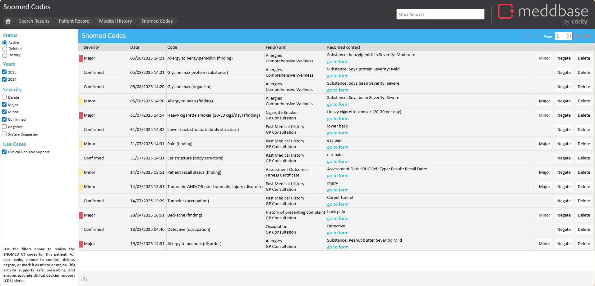
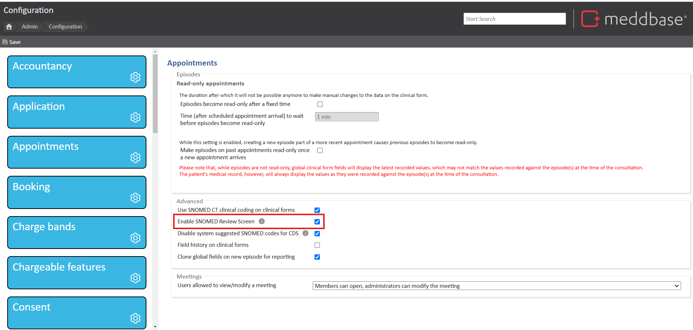
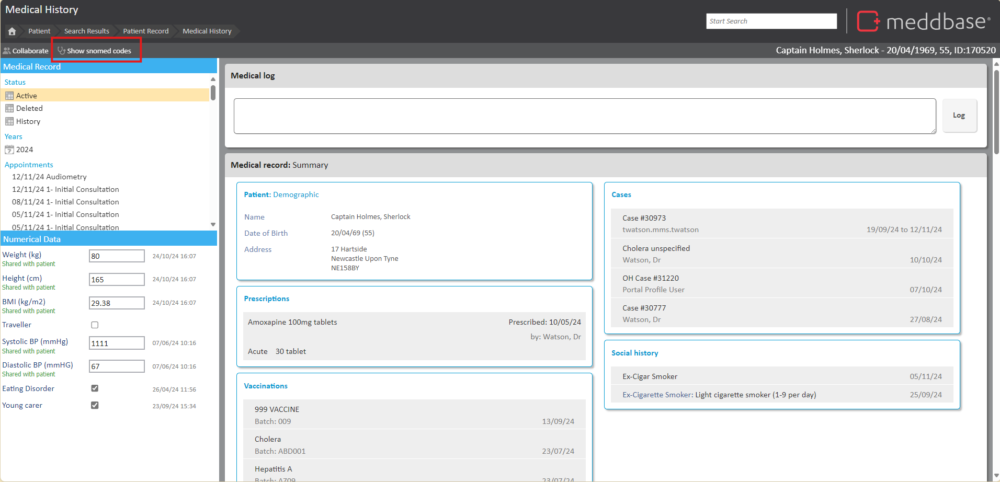
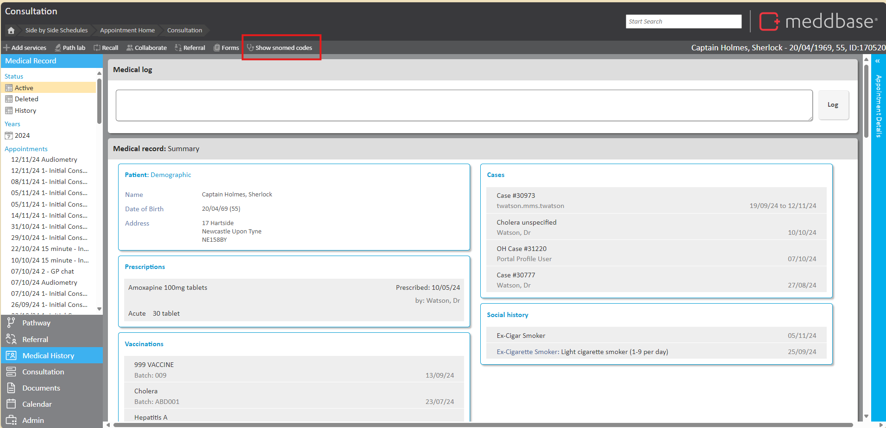

SNOMED CT (Systematized Nomenclature of Medicine - Clinical Terms) is a structured clinical vocabulary used in electronic health records (EHRs). It is the most comprehensive and precise clinical health terminology product in the world. The primary purpose of SNOMED CT is to encode the meanings used in health information, supporting the effective recording of clinical data and ultimately improving patient care.
Meddbase Clinical Forms can utilise SNOMED CT, enabling seamless integration of standardized clinical terms into patient records. This ensures consistent and accurate documentation for healthcare providers, allowing them to manage patient data effectively. Additionally, SNOMED CT matches are considered by the Multilex Clinical Decision Support engine when prescribing drugs in Meddbase, helping to ensure appropriate and safe prescribing practices.
An understanding of SNOMED CT terms in Meddbase is required for this article, to learn more about SNOMED in Meddbase, please read Working with SNOMED CT terms in Meddbase first.
This article provides an overview of the SNOMED Review Screen within Meddbase, explaining how healthcare providers can use it to manage and review SNOMED CT codes associated with a patient. It outlines how to enable the SNOMED Review Screen and where to find it, along with how to view and manage SNOMED codes within the system.
This article is broken down into the following sections:
The SNOMED Review Screen in Meddbase provides a central place to view and manage all SNOMED CT codes associated with a patient’s record. It allows users to easily review and manage these codes without needing to go into each appointment or clinical form. From this screen, users can take actions such as confirming, negating, or deleting codes.

To enable the SNOMED Review Screen for your entire chamber, follow these steps:

You can access the SNOMED Review Screen from the following areas:


The SNOMED Review Screen displays all SNOMED CT codes associated with a patient in a table format, showing key details for each code, including:
On the left-hand side of the SNOMED review page, you can filter results based on:
The Use Cases filter is a crucial feature within the SNOMED page. This filter provides an overview of all SNOMED concept codes that interact with the Clinical Decision Support (CDS) engine during the prescribing process.
By using this filter, clinicians can review and manage these SNOMED codes, identifying any that may be invalid or not applicable to the patient. This ensures that only accurate and relevant codes are associated with a patient’s record, which in turn helps maintain the accuracy and safety of prescribed treatments.
The filter also allows clinicians to see which SNOMED codes will trigger preparation warnings, making it easier to confirm or negate system-suggested codes. By ensuring only relevant terms are active, clinicians can be confident that the CDS engine is providing appropriate alerts and recommendations based on the patient’s current needs.

From the SNOMED Review Screen, you can manage the associated codes in several ways. You have the ability to:
By modifying the SNOMED code status, you will reflect what codes are sent to the Clinical Decision Support Engine, ensuring accurate and up-to-date preparation warnings when Prescribing.
For more detailed information on working with SNOMED CT terms in Meddbase, please refer to our article Working with SNOMED CT terms in Meddbase.